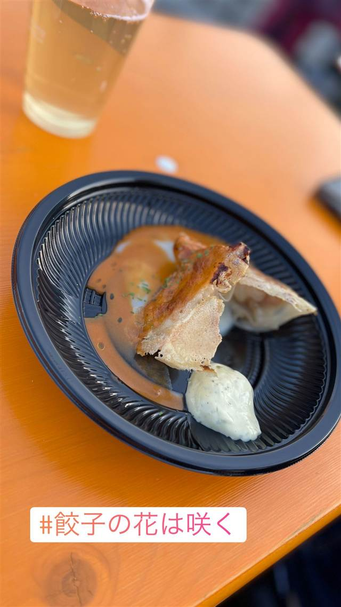

餃子の花は咲く
讃岐うどん店から転身、にんにく不使用の腸活餃子
餃子の花は咲く
中野の人気讃岐うどん店「花は咲く」の荻窪店が2020年に餃子専門店へ業態転換して誕生。発酵野菜や大豆ミートを使い、にんにく不使用で仕立てた「腸活餃子」が名物。
TRIVIA
豆知識
- 前身は讃岐うどん店で、居抜きのままうどん屋から餃子専門店へ業態転換した
- にんにく不使用ながら「食べ続けると体にいい」を掲げる腸活餃子
REVIEWS
世間の評判
3.31食べログ
ニンニク不使用のヘルシー餃子
- ニンニク不使用で発酵野菜や大豆ミートを使った餃子を評価する声が多い
- 白醤油ラーメンとのセットの完成度を評価する声がある
- 写真と異なる形の餃子が出たという指摘もある
食べログ 口コミ34件
| 創業 | 2020年9月、系列の讃岐うどん店「花は咲く」荻窪店をリニューアルしてオープン。 |
|---|---|
| 系譜 | 本店は中野にある人気讃岐うどん店「花は咲く」（食べログ百名店選出の実績を持つ）。荻窪店はそのうどん業態から餃子専門店へ転換した姉妹店。 |
| 看板 | 発酵野菜・大豆ミート・大麦を使った「腸活餃子」（にんにく不使用） |
| こだわり | 「発酵」をテーマに、餡へ発酵野菜・大豆ミート・大麦を使用。にんにくを使わない健康志向の餃子で、うどん屋出身らしくもちもちとした皮が特徴。 |
| どこから | 23区の外れ・近郊 |
| 営業時間 | 月・火 11:00-15:00、17:00-22:00 水 休み 木〜日 11:00-15:00、17:00-22:00 |
| 場所 | 荻窪駅 東京都杉並区荻窪 |
| メモ | 冷凍生餃子の通販も展開し、月間1万2000個規模で販売している。 |
食べたもの：餃子(フェス)
NEARBY
近い店・同じ系統の店
-
 ★
煮干し・魚介 荻窪
there is ramen
開業1年でミシュランのビブグルマンを獲得した花びらチャーシュー
昼 ¥1,000～¥1,999 夜 ¥1,000～¥1,999
★
煮干し・魚介 荻窪
there is ramen
開業1年でミシュランのビブグルマンを獲得した花びらチャーシュー
昼 ¥1,000～¥1,999 夜 ¥1,000～¥1,999
-
 ★
二郎系(直系) 荻窪駅
ラーメン二郎 荻窪店
桜台仕込みの乳化スープ、女性スタッフの「癒し系」二郎
昼 ～¥999 夜 ～¥999
★
二郎系(直系) 荻窪駅
ラーメン二郎 荻窪店
桜台仕込みの乳化スープ、女性スタッフの「癒し系」二郎
昼 ～¥999 夜 ～¥999
-
 餃子専門 亀戸駅
亀戸餃子 本店
座ると自動で2皿確定、1955年創業の下町餃子専門店
昼 ～¥999 夜 ～¥999
餃子専門 亀戸駅
亀戸餃子 本店
座ると自動で2皿確定、1955年創業の下町餃子専門店
昼 ～¥999 夜 ～¥999
-
 餃子専門 幡ヶ谷
您好（ニイハオ）
ひき肉でなく粗く刻んだ肉を使う、連続ビブグルマンの餃子
昼 ¥2,000～¥2,999 夜 ¥2,000～¥2,999
餃子専門 幡ヶ谷
您好（ニイハオ）
ひき肉でなく粗く刻んだ肉を使う、連続ビブグルマンの餃子
昼 ¥2,000～¥2,999 夜 ¥2,000～¥2,999
-
 餃子専門 乃木坂
赤坂珉珉（みんみん）
酢コショウで食べる元祖、渋谷の名店直系ののれん分け店
夜 ¥4,000～¥4,999
餃子専門 乃木坂
赤坂珉珉（みんみん）
酢コショウで食べる元祖、渋谷の名店直系ののれん分け店
夜 ¥4,000～¥4,999
-
 餃子専門 銀座一丁目
銀座天龍 本店
ニンニクを使わず白菜と豚肉だけで作る12cmの大判餃子を創業以来守る
昼 ¥1,000～¥1,999 夜 ¥3,000～¥3,999
餃子専門 銀座一丁目
銀座天龍 本店
ニンニクを使わず白菜と豚肉だけで作る12cmの大判餃子を創業以来守る
昼 ¥1,000～¥1,999 夜 ¥3,000～¥3,999
ONSEN & SAUNA